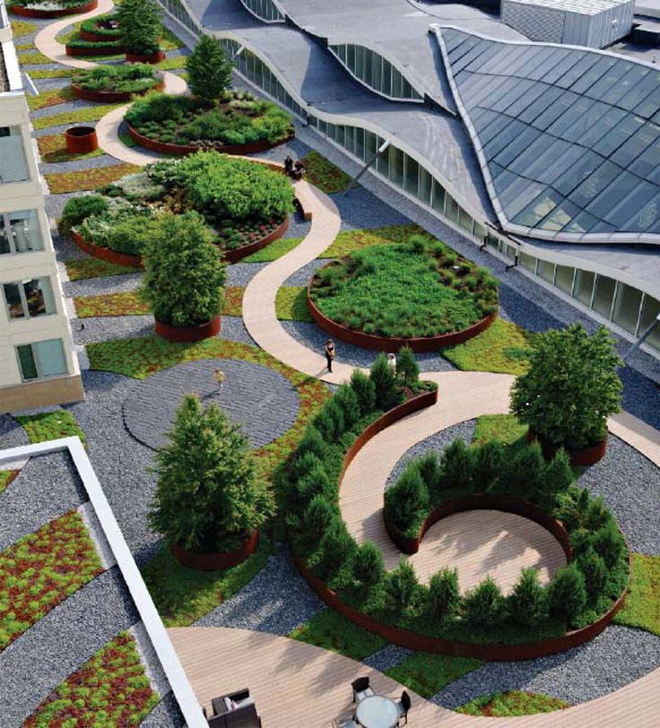
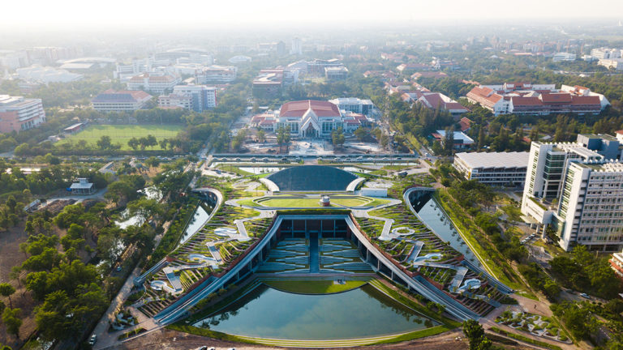

La idea de paisaje, que permita divisar con claridad los componentes esenciales del tema y así definirlo como campo de exploración académica, resulta más que pertinente referirse a la clasificación esencial que sobre el paisaje ofrece Dixon Hunt, quien fundamenta su reflexión en estudios historiográficos, de tipo general universal tanto como específicos sobre el tema del paisaje, proponiendo básicamente la existencia tres diferentes grandes tipos paisaje que constituyen a su vez lo que él denomina, primera, segunda y tercera, naturalezas, categorías conceptualizables.
Partiendo de la propuesta del proyecto educativo del programa de arquitectura, de orientar la formación integral hacia la comprensión de la arquitectura, a través de las nociones de proyecto, hábitat, paisaje y sostenibilidad, y reconociendo que el objeto de conocimiento planteado es el "proyecto de arquitectura" (ver: documento de resignificación curricular institucional, 2014) con el fin de que el entendimiento especializado de la arquitectura conlleve a soluciones sistemáticas, integrales y consecuentes con el medio y su contexto, se plantea que al interior de la línea de investigación en paisaje, lugar y territorio, se desarrolle como objeto de estudio específico, el entendimiento de la relación sociedad, hábitat y naturaleza, a través del concepto de fundamentación epistémica y proyectual de: arquitectura del paisaje. La valoración ambiental de tipologías de arquitectura del paisaje, propone un campo de estudio de la arquitectura y al mismo tiempo se convierte en la posibilidad de encontrar nuevos sistemas de significación del paisaje cultural y criterios de valoración ambiental del patrimonio arquitectónico.
En términos de su fundamento epistemológico, la línea denominada Paisaje, Lugar y Territorio gira en torno a los tres conceptos o tipos esenciales de paisaje anteriormente esbozados, a sus diversas manifestaciones en el contexto actual e histórico (local y regional, en forma principal más no exclusivamente) y a los numerosos puntos de encuentro que estos tres conceptos de paisaje tienen entre sí. Cabe anotar aquí, de forma significativa que existe una correspondencia directa entre las tres categorías o tipos de paisaje que estructuran el enfoque de la línea y tres de las categorías conceptuales estructurantes de la Línea en su conjunto: territorio, sostenibilidad y diseño, y en esta medida articulan las principales preocupaciones investigativas de la línea.


La configuración de la nueva fábrica ya no es impuesta desde el exterior, sino que es el funcionamiento global el que la conforma. Sin esta forma necesaria, la máquina global ya no podría funcionar, pudiendo considerarse el conjunto como un objeto técnico concreto. Así, los nuevos edificios, diseñados más precisamente para su función, fueron rápidamente obsoletos. ¿Por qué? Porque había un nuevo y moderno parámetro para lo funcional: los edificios no debían solo acomodarse a los cambios sino anticiparse a ellos.
Este era el nuevo funcionalismo de la flexibilidad total. Luego de los años 70 hubo nuevos rumbos en la arquitectura industrial pero el legado de la antelación fue y será una constante en esta tipología.